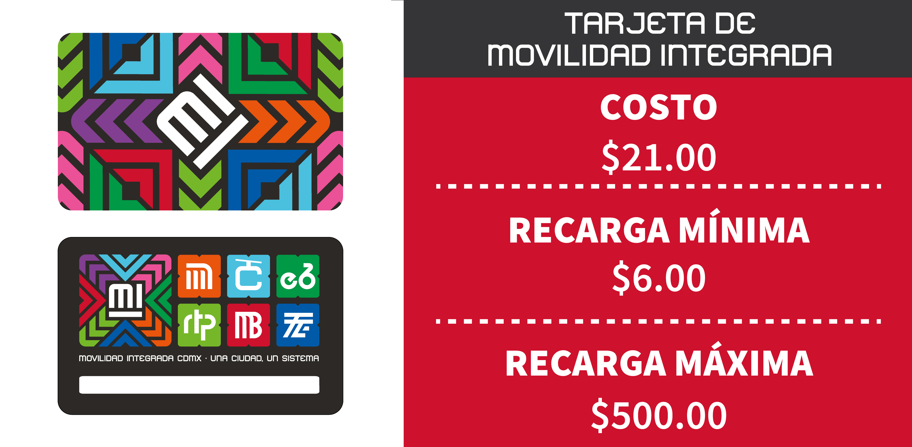

Costos
El costo por viaje es de $6 pesos, el primer trasbordo es gratuito, si haces más de un transbordo se cobra $6 pesos más.
Para hacer una recarga tienes que ir directamente a los kioscos, la recarga mínima es de $6 pesos y la máxima
$500 pesos. Si no tienes se puede comprar en las estaciones de metrobus, en los mismos kioscos, donde viene
la opción de recarga o compra tiene un costo de $21 pesos *la máquina no da cambio*